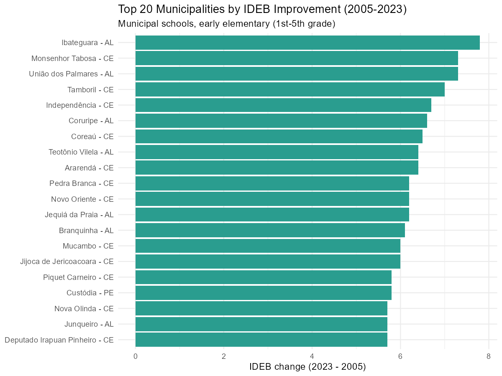
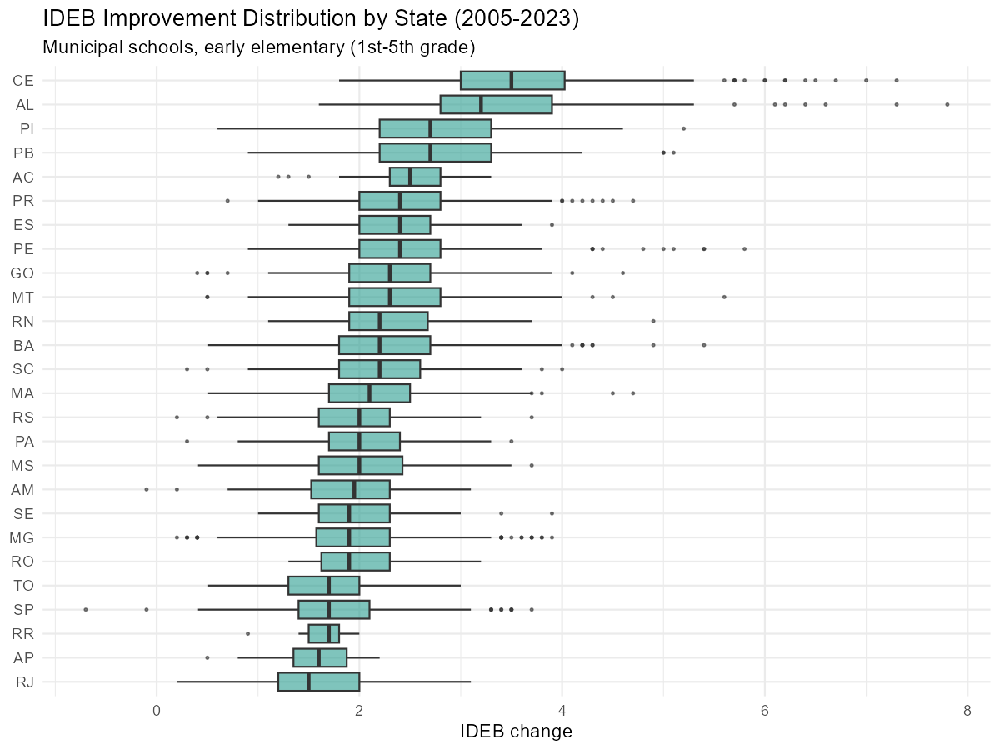
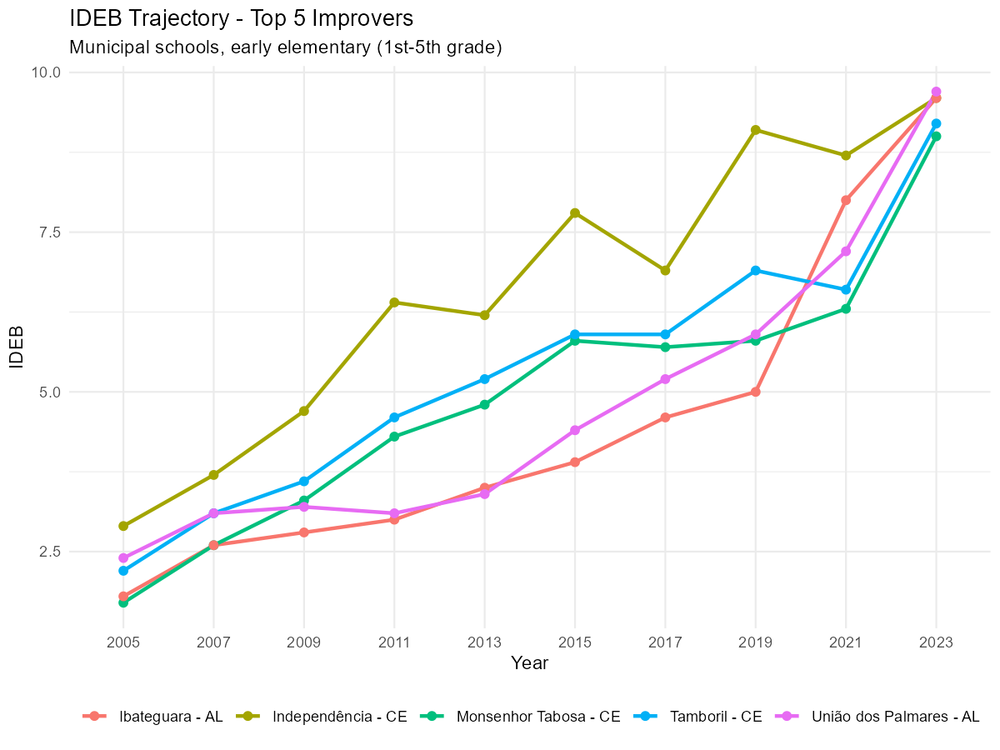
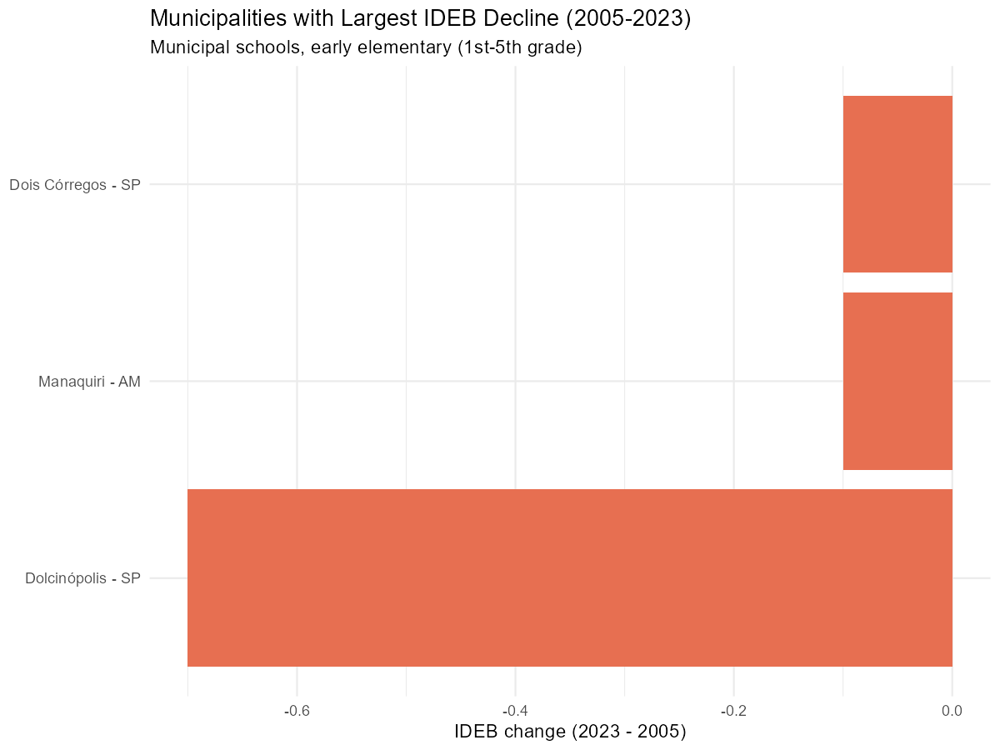

Which municipalities improved the most in IDEB?
Source:vignettes/ideb-improvement-by-municipality.Rmd
ideb-improvement-by-municipality.RmdThis vignette shows how to use educabR to identify which
municipalities had the largest IDEB improvement over time, using the
historical series available via get_ideb().
Downloading IDEB data
get_ideb() returns data in long format with all
available editions. A single call with year = c(2005, 2023)
gives us the two endpoints we need for comparison.
ideb <- get_ideb(
level = "municipio",
stage = "anos_iniciais",
metric = "indicador",
year = c(2005, 2023)
)
glimpse(ideb)#> Rows: 86,982
#> Columns: 7
#> $ uf_sigla <chr> "RO", "RO", "RO", "RO", "RO", "RO", …
#> $ municipio_codigo <chr> "1100015", "1100015", "1100015", "1100…
#> $ municipio_nome <chr> "Alta Floresta D'Oeste", "Alta Florest…
#> $ rede <chr> "Estadual", "Municipal", "Pública", "E…
#> $ ano <int> 2005, 2005, 2005, 2005, 2005, 2005, 20…
#> $ indicador <chr> "IDEB", "IDEB", "IDEB", "IDEB", "IDEB…
#> $ valor <dbl> 3.5, NA, 3.7, 4.0, 3.5, 3.7, 4.1, 3.4…Calculating IDEB improvement
We filter to the IDEB indicator for municipal schools, pivot to wide format to get one column per year, then compute the change.
ideb_change <-
ideb |>
filter(indicador == "IDEB") |>
filter(rede == "Municipal") |>
select(uf_sigla, municipio_codigo, municipio_nome, ano, valor) |>
pivot_wider(names_from = ano, values_from = valor, names_prefix = "ideb_") |>
filter(!is.na(ideb_2005), !is.na(ideb_2023)) |>
mutate(
change = ideb_2023 - ideb_2005,
pct_change = change / ideb_2005 * 100
)Top 20 municipalities by absolute improvement
ideb_change |>
slice_max(change, n = 20) |>
ggplot(aes(
x = reorder(paste(municipio_nome, uf_sigla, sep = " - "), change),
y = change
)) +
geom_col(fill = "#2a9d8f") +
coord_flip() +
labs(
title = "Top 20 Municipalities by IDEB Improvement (2005-2023)",
subtitle = "Municipal schools, early elementary (1st-5th grade)",
x = NULL,
y = "IDEB change (2023 - 2005)"
) +
theme_minimal()
Distribution of improvement by state
ideb_change |>
ggplot(aes(x = reorder(uf_sigla, change, FUN = median), y = change)) +
geom_boxplot(fill = "#2a9d8f", alpha = 0.6, outlier.size = 0.5) +
coord_flip() +
labs(
title = "IDEB Improvement Distribution by State (2005-2023)",
subtitle = "Municipal schools, early elementary (1st-5th grade)",
x = NULL,
y = "IDEB change"
) +
theme_minimal()
IDEB trajectory for selected municipalities
# Pick the top 5 improvers
top5 <-
ideb_change |>
filter(rede == "Municipal") |>
slice_max(change, n = 5) |>
pull(municipio_codigo)
# Get full history for these municipalities
ideb_full <-
get_ideb(
level = "municipio",
stage = "anos_iniciais",
metric = "indicador"
) |>
filter(rede == "Municipal")
ideb_full |>
filter(municipio_codigo %in% top5, indicador == "IDEB") |>
mutate(label = paste(municipio_nome, uf_sigla, sep = " - ")) |>
ggplot(aes(x = factor(ano), y = valor, color = label, group = label)) +
geom_line(linewidth = 1) +
geom_point(size = 2) +
labs(
title = "IDEB Trajectory - Top 5 Improvers",
subtitle = "Municipal schools, early elementary (1st-5th grade)",
x = "Year",
y = "IDEB",
color = NULL
) +
theme_minimal() +
theme(legend.position = "bottom")
Municipalities that declined
ideb_change |>
filter(change < 0) |>
slice_min(change, n = 15) |>
ggplot(aes(
x = reorder(paste(municipio_nome, uf_sigla, sep = " - "), change),
y = change
)) +
geom_col(fill = "#e76f51") +
coord_flip() +
labs(
title = "Municipalities with Largest IDEB Decline (2005-2023)",
subtitle = "Municipal schools, early elementary (1st-5th grade)",
x = NULL,
y = "IDEB change (2023 - 2005)"
) +
theme_minimal()